-
1990
World Wide Web
The first web browser - or browser-editor rather - was called WorldWideWeb as, after all, when it was written by Tim Berners-Lee for the NeXT Computer in 1990 it was the only way to see the web. Much later it was renamed Nexus in order to save confusion between the program and the abstract information space (which is now spelled World Wide Web with spaces).

-
1991
First Discussion About HTML
The first publicly available description of HTML was a document called "HTML Tags", first mentioned on the Internet by Tim Berners-Lee in late 1991. It describes 18 elements comprising the initial, relatively simple design of HTML. Except for the hyperlink tag, these were strongly influenced by SGMLguid, an in-house Standard Generalized Markup Language (SGML)-based documentation format at CERN. Eleven of these elements still exist in HTML 4.
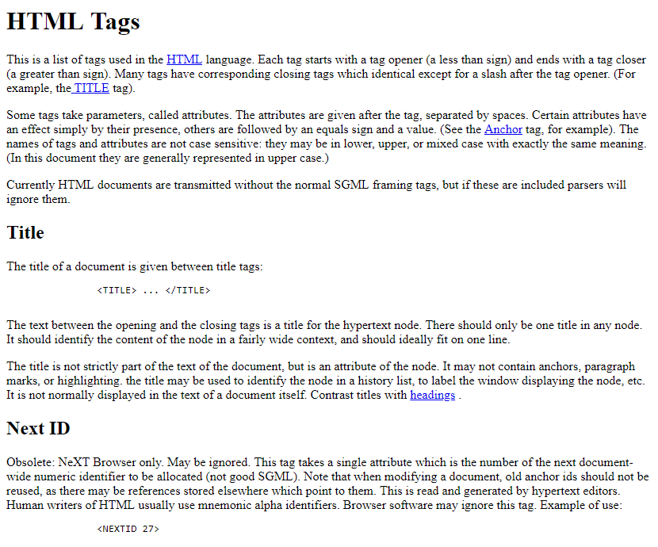 -
1992
Lynx (Oldest Web Browser)
Lynx was a product of the Distributed Computing Group within Academic Computing Services of the University of Kansas, and was initially developed in 1992 by a team of students and staff at the university (Lou Montulli, Michael Grobe and Charles Rezac) as a hypertext browser used solely to distribute campus information as part of a Campus-Wide Information Server and for browsing the Gopher space. Beta availability was announced to Usenet on 22 July 1992.
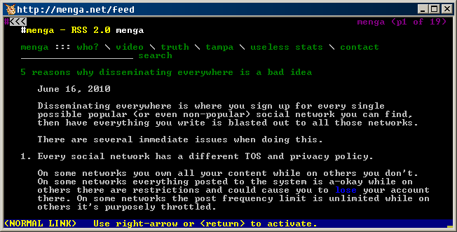 -
1993
NCSA Mosaic
Development began in December 1992. Marc Andreessen announced the project's first release, the "alpha/beta version 0.5," on January 23, 1993. Version 1.0 was released on April 22, 1993.
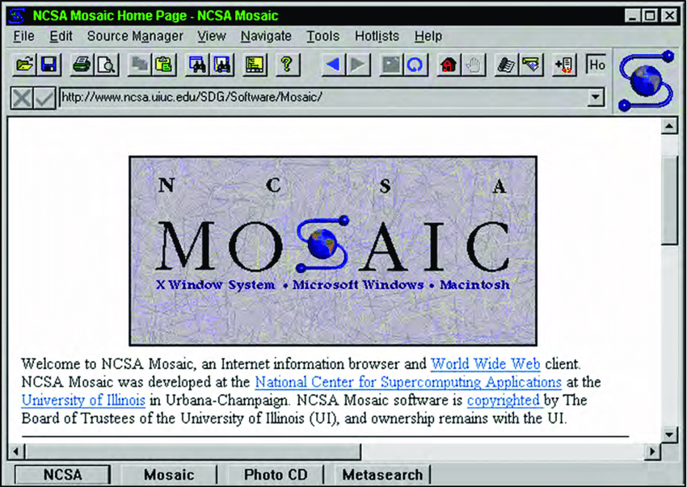 -
1994
Netscape Navigator
Netscape Navigator was inspired by the success of the Mosaic web browser, which was co-written by Marc Andreessen, a part-time employee of the National Center for Supercomputing Applications at the University of Illinois. Netscape announced in its first press release (13 October 1994) that it would make Navigator available without charge to all non-commercial users, and beta versions of version 1.0 and 1.1 were indeed freely downloadable in November 1994 and March 1995, with the full version 1.0 available in December 1994.
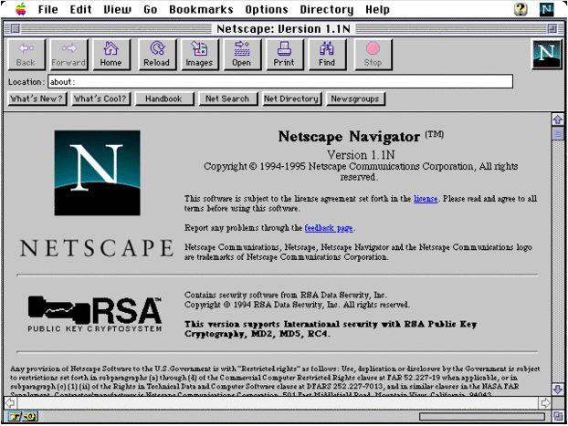 -
1995
Interne Explorer 1.0
It was initially based on Spyglass Mosaic. At various points, Internet Explorer was also available for MacOS, Solaris, and HP-UX. At its 1995 release, Internet Explorer competed with the Mosaic web browser and Netscape Navigator. Home Internet access was still somewhat new and competed against proprietary services like CompuServe, AOL, and Microsoft's own MSN.
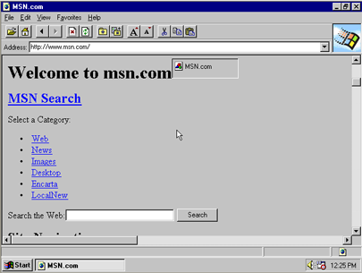 -
Aug 1996
JScript 1.0
Microsoft implemented JavaScript into Internet Explorer 3.0 under the name JScript 1.0. By changing the name to JScript, Microsoft wanted to avoid potential patent litigation with Sun Microsystems, which created the Java programming language.
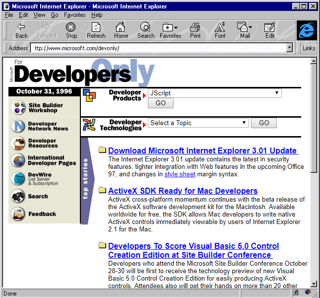 -
Dec 1996
Cascading Style Sheets 1 (CSS 1)
CSS was first proposed by Håkon Wium Lie on 10 October 1994. At the time, Lie was working with Tim Berners-Lee at CERN. Several other style sheet languages for the web were proposed around the same time, and discussions on public mailing lists and inside World Wide Web Consortium resulted in the first W3C CSS Recommendation (CSS1) being released in 1996.
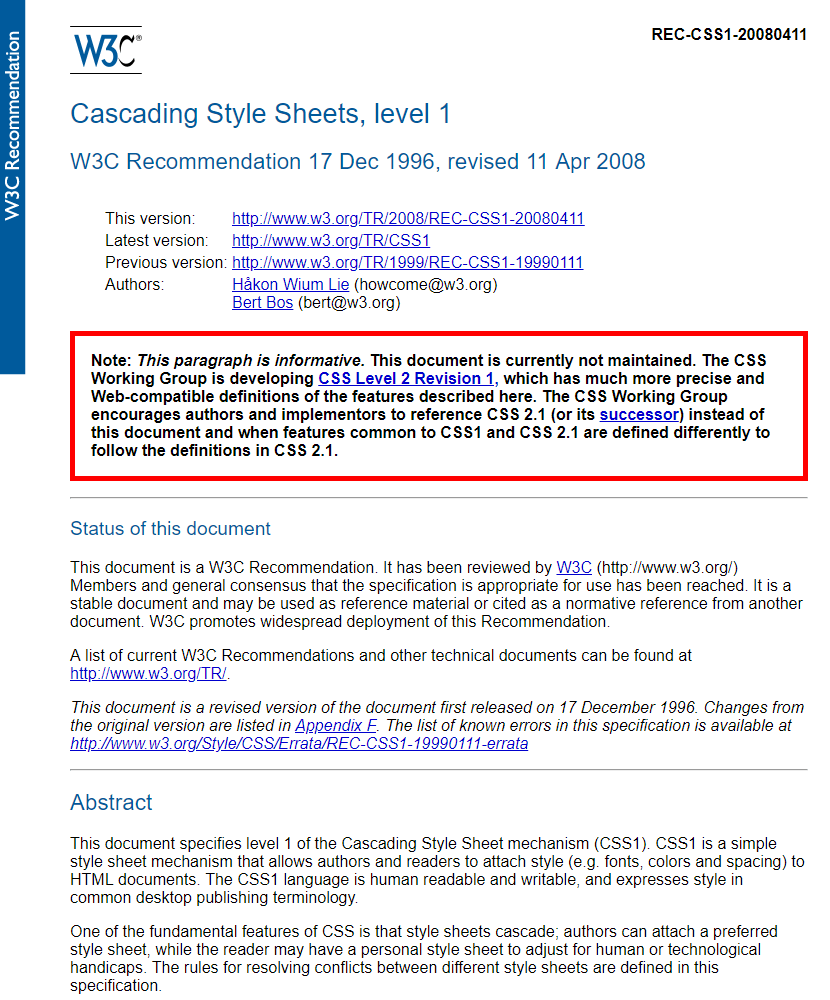 -
1997
HTML 3.2
W3C issued a final recommendation specifying the HTML 3.2 markup language. The original HTML 3.0 version had never become a standard, as it was too complicated, and the leading Microsoft and Netscape developers had a problem implementing it.
W3C published official recommendations for the HTML 4.0 specification. The HTML 4.0 specification was divided into three variants: Strict, Transitional, and Frameset, and its aim was to separate the HTML semantics and the document layout (formatted using only CSS) into two separate parts.
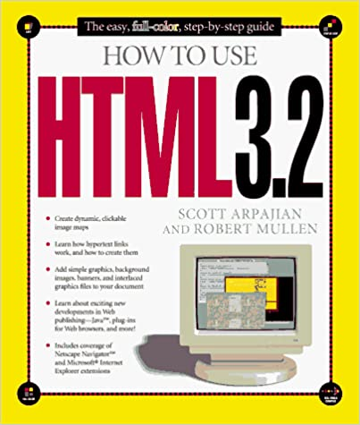 -
1999
HTML 4.01
This format description is for HTML version 4.01, standardized under the auspices of the World Wide Web Consortium (W3C) and published as a W3C Recommendation in December 1999. The abstract of the specification reads, "This specification defines the HyperText Markup Language (HTML), the publishing language of the World Wide Web. This specification defines HTML 4.01, which is a subversion of HTML 4.
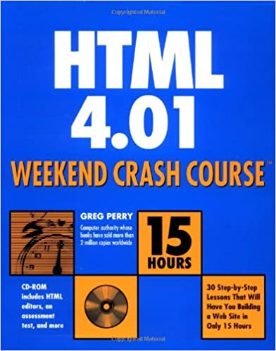 -
2000
Extensible HyperText Markup Language (XHTML)
XHTML is a markup language for creating hypertext documents in an Internet environment. XHTML originated from an integration of XML and HTML and was divided into three versions: Strict, Transitional, and Frameset. According to W3C's original plans, XHTML was supposed to be the successor to HTML, whose development was completed by version 4.01. However, in 2007, a new version of HTML started being developed, labeled HTML5.
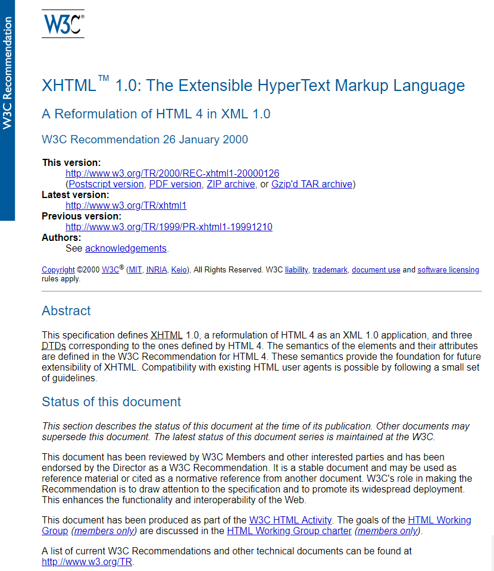 -
2001
Audi.com, First Partially “Responsive” Website
The website designed for Audi by the Razorfish digital agency was one of the first to modify its content based on the size of the web browser window. Audi.com was “optimized” for 640x480 px, 800x600 px and 1024x768 px. However, Audi.com was not a classic example of responsive web design as we know it today, but rather a dynamic customization of design using JavaScript, based on a detection of browser resolution.
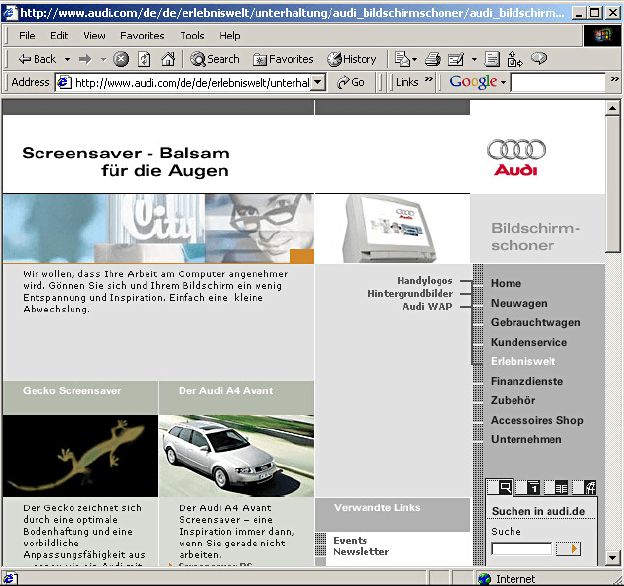 -
2003
Apple Releases Safari 1.0
June 23, 2003, Apple introduced Safari™ 1.0, completing the wildly successful beta program which had nearly five million downloads since its initial release on January 7, 2003. Safari has become the browser of choice for millions of Mac® users and will be the default browser for all newly introduced Macintosh® computers, starting with the Power Mac® G5 announced today. Apple also released a software development kit that allows developers to embed the Safari HTML rendering engine directly into their applications.
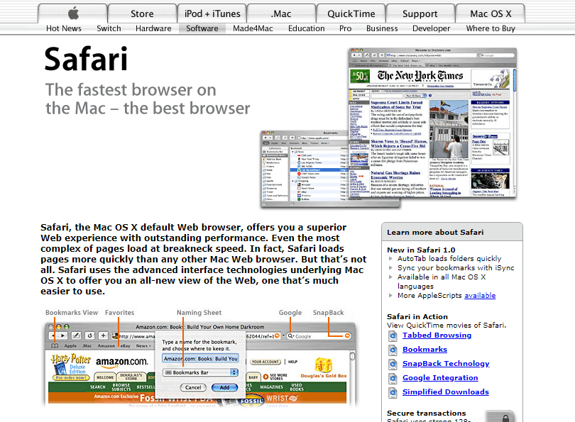 -
2004
Mozilla Firefox
The project began as an experimental branch of the Mozilla project by Dave Hyatt, Joe Hewitt, and Blake Ross. They believed the commercial requirements of Netscape's sponsorship and developer-driven feature creep compromised the utility of the Mozilla browser. t was released on November 9, 2004, and challenged Internet Explorer's dominance with 60 million downloads within nine months.
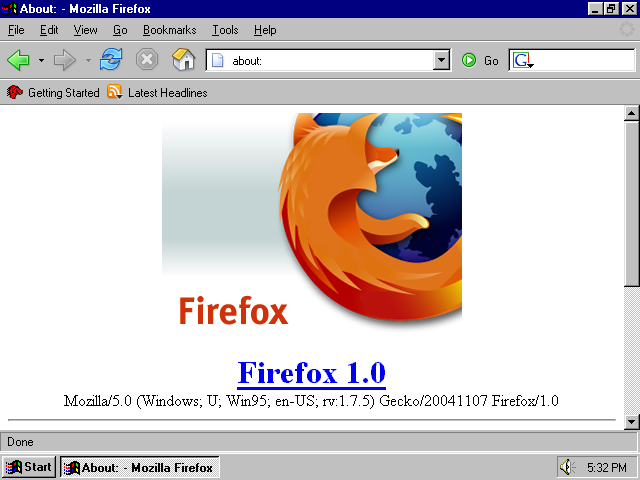 -
2005
First Video Uploaded to YouTube
Three former PayPal employees, Chad Hurley, Steve Chen and Jawed Karim, launched the YouTube website for publishing and sharing video files. The first video called "Me at the zoo" was uploaded to YouTube on 23 April, 2005 by one of the co-founders, Jawed Karim. It was a short video from the San Diego zoo. In November 2006, YouTube was purchased by Google for $ 1.65 billion.
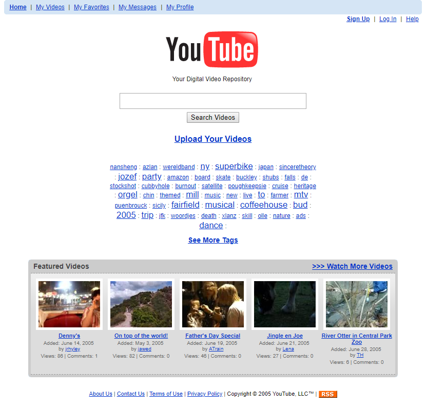 -
2006
jQuery 1.0 - Alpha Release
jQuery is a JavaScript library designed to simplify HTML DOM tree traversal and manipulation, as well as event handling, CSS animation, and Ajax. It is free, open-source software using the permissive MIT License. jQuery was originally created in January 2006 at BarCamp NYC by John Resig, influenced by Dean Edwards' earlier cssQuery library. It is currently maintained by a team of developers led by Timmy Willison (with the jQuery selector engine, Sizzle, being led by Richard Gibson).
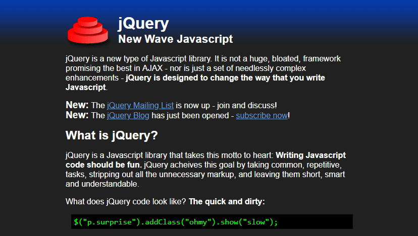 -
2008
Google Chrome
In December 2008, the first stable version of Google Chrome 1.0 was released. Since January 2009, Chrome has been available for MacOS, and in February 2012, its first beta version for Android 4 was released. At the turn of April and May 2012, Chrome surpassed the popularity of Internet Explorer and became the most widely used web browser.
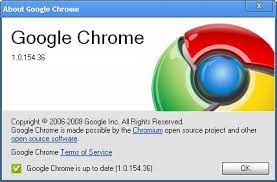 -
2009
First Facebook “like” button
The internet social networking site Facebook introduced its “like button” feature for the first time. Clicking the button with a thumb up icon indicates a user's positive reaction to the content of the web page on which the button is located. In 2011, Google introduced a similar button to mark one’s favorite content called the +1 button for its Google+ social network.
-
2011
Bootstrap 1
Web developers Mark Otto and Jacob Thorton of Twitter began creating the CSS framework Bootstrap in mid-2011. The framework was originally developed to help maintain the HTML/CSS and JavaScript code consistency in Twitter applications. In August 2011, Bootstrap 1 was released as an open source tool and is currently one of the most popular CSS frameworks among web designers. In January 2012, Bootstrap 2 was released, supporting a responsive web layout.
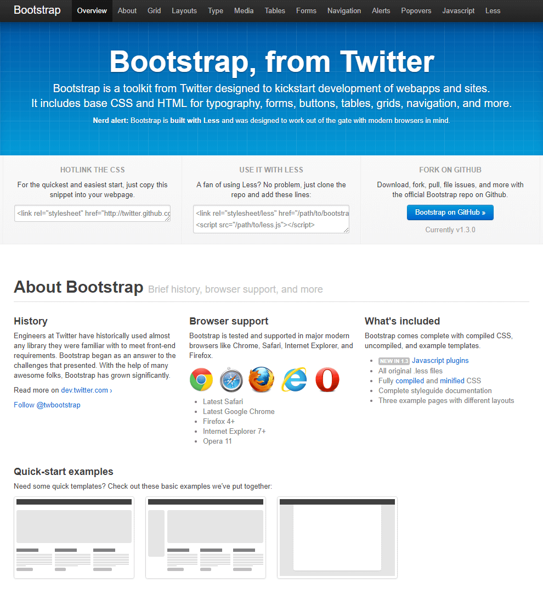 -
2013
React.js Library
React is a declarative, efficient, and flexible JavaScript library for building user interfaces. Code Splitting helps apps to perform well where performance is key. what started as Facebook's internal hackathon project, in the summer of 2013, has since become one of the most popular frameworks. The first public preview was in January of 2015 at React.js Con. In March of 2015, Facebook announced at F8 that React Native is open and available on GitHub.
-
2014
HTML5
On 28 October 2014, HTML5 was released as a W3C Recommendation, bringing the specification process to completion. On 1 November 2016, HTML 5.1 was released as a W3C Recommendation. On 14 December 2017, HTML 5.2 was released as a W3C Recommendation. It is the fifth and final major HTML version that is a World Wide Web Consortium (W3C) recommendation. The current specification is known as the HTML Living Standard. It is maintained by the Web Hypertext Application Technology Working Group (WHATWG), a consortium of the major browser vendors (Apple, Google, Mozilla, and Microsoft).

-
2015
Microsoft Edge
Microsoft Edge is a cross-platform web browser created and developed by Microsoft. It was first released for Windows 10 and Xbox One in 2015, for Android and iOS in 2017, for macOS in 2019, and for Linux in 2020. The Chromium-based Edge replaced Internet Explorer (IE) in Windows 11, as the default web browser (for compatibility with Google Chrome web browser).
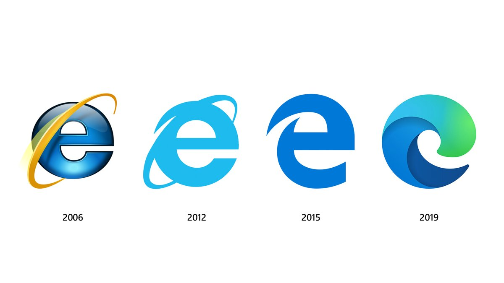 -
2020
Termination of Adobe Flash
Since Adobe no longer supports Flash Player after December 31, 2020 and blocked Flash content from running in Flash Player beginning January 12, 2021, Adobe strongly recommends all users immediately uninstall Flash Player to help protect their systems. In the field of web multimedia and interactivity, Flash became gradually replaced by HTML5, WebGL, or WebAssembly technology.
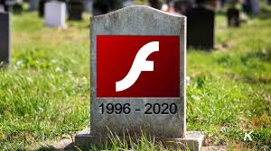